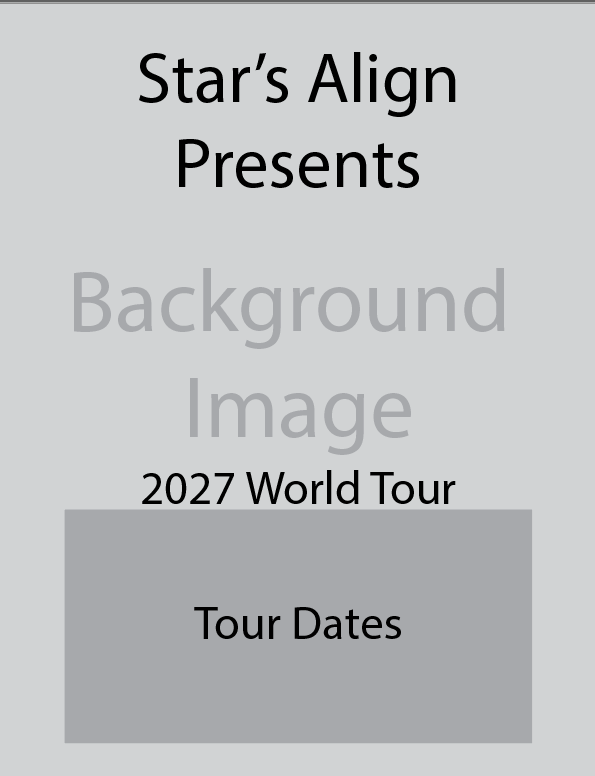
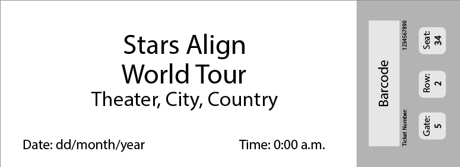

-

Symmetric World Tour Poster
Features an AI-generated band image, paired with a structured, centered block of tour dates at the base.
-

Social Media Post Carousel 1
A mobile social media cover slide that engages users to swipe for upcoming tour date locations.
-

Social Media Post Carousel 2
Highlights the initial leg of tour dates.
-

Social Media Post Carousel 3
Final post slide, displaying international tour stops.
Context: Inspired by the exploration of visual identity systems following the Botanic Bloom Bistro project, the Stars Align Tour
Campaign is a comprehensive promotional toolkit built for an original, fictional band tour. The project explores how cohesive brand
guidelines can cross seamlessly across different media to deliver a unified visual experience. The deliverables span multiple formats and
layouts, starting with both symmetrical and asymmetrical tour poster variations— featuring a clean center-aligned hierarchy and a
dynamic right-aligned diagonal column for informal variety.
This aesthetic is translated into a minimalist, three-slide
mobile social media carousel utilizing a centered single-column layout and high contrast, as well as a simulated physical concert ticket
structured with balanced vertical and horizontal alignments. Ultimately, the campaign highlights advanced systemic design thinking,
demonstrating how consistent visual identity rules can scale fluidly from print posters to digital and physical touchpoints.
Goal: To explore a different type of visual identity system and how it can translate across multiple distinct media– expanding a brand system into a comprehensive promotional toolkit containing physical deliverables (posters and tickets) and digital deliverables (social media carousels).
Process & Iterations:

Step 1
Engaged in inspiration and content gathering, before establishing the core visual identity and rules for the fictional band. Then, translated said rules into primary event posters. Designed a structured, symmetrical layout for clean information hierarchy, followed by an asymmetrical variation, utilizing a dynamic, right-aligned diagonal column for visual interest.
Step 2
Translated the campaign's visuals into a digital medium by adapting the poster design into a three-slide mobile social media carousel. Utilized minimalist design principles– a centered single-column layout, and strategic contrast– to ensure clear scannability and brand consistency on digital feeds.

Step 3
Expanded the system into a purely physical medium by designing a simulated concert ticket. Balanced vertical and horizontal alignments and established structured information sections. Then, executed any final adjustments across all deliverables to ensure a seamless, unified brand experience from print to digital.
The Challenges:
- Cross-Media System Translation: Maintaining a cohesive, recognizable visual identity while successfully adapting design rules across distinct media– from large print posters to physical tickets and digital mobile social media carousels.
- Balancing Symmetrical & Asymmetrical Layouts: Experimenting with visual variety by transitioning from a strict, center-aligned information hierarchy to a dynamic right-aligned column without breaking the campaign's unified feel.
- Adapting Content for Immersive Digital Formats: Translating a poster-level layout into a clean, minimalist three-slide social media carousel, while preserving readability, strategic contrast, and single-column mobile scannability.
Key Features & Highlights:
- Comprehensive Multi-Medium Toolkit: Created a complete promotional campaign that bridges print, physical, and digital mediums into a single cohesive brand experience.
- Dual Tour Poster Variants: Designed both a structured, symmetrical center-aligned poster for primary event announcements, and an informal, asymmetrical variation.
- Physical Concert Ticket Design: Created a physical concert ticket that incorporates tactile authenticity through balanced vertical and horizontal alignments, structured informational sections, and strict visual hierarchy.
- Minimalist Digital Social Media Carousel: Translated the campaign design into a three-slide mobile social media carousel, utilizing a centered, single-column layout and sharp contrast for feed engagement.
- Brand System Consistency: Built a set of guidelines that demonstrates how visual rules, typography, and hierarchy can transfer seamlessly across disparate media deliverables.